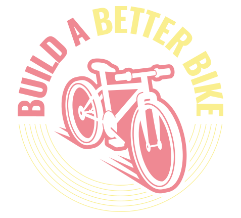
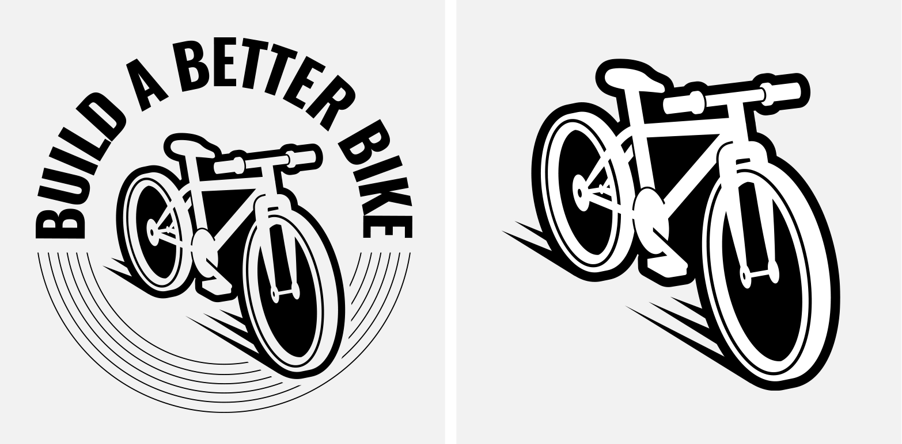
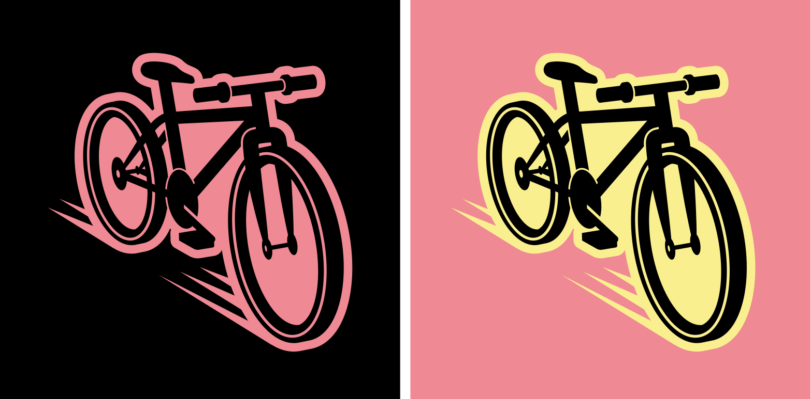
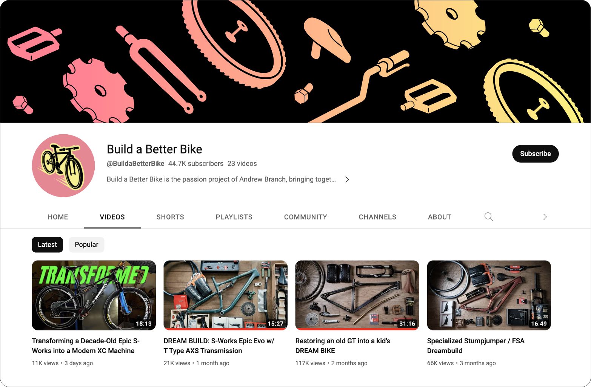

Build A Better Bike is a YouTube channel by Andrew Branch that focuses on bringing together all of his greatest loves (photography/videography, mountain bikes, music, and craftsmanship) and combining them. The result isn't just a better bike. It's an immersive audio and video experience.
The design of the logo for Build A Better Bike is an illustrated representation of a retro-style bicycle. The bicycle in the logo is designed with elegant lines and smooth curves, evoking a sense of movement and dynamism.
Logo Design
 The banner designed for the YouTube channel presents a captivating composition in which illustrated elements of bicycle parts are used in a simple yet impactful style. The bicycle parts are arranged in an interesting manner, creating visual balance and capturing the viewer's attention. The minimalist and clean design highlights the essence of the channel's theme, conveying the passion for bicycles in an elegant and straightforward way. The strategic use of bicycle parts in the banner instantly establishes a visual connection with the channel's content, sparking curiosity and interest in visitors to explore further.
